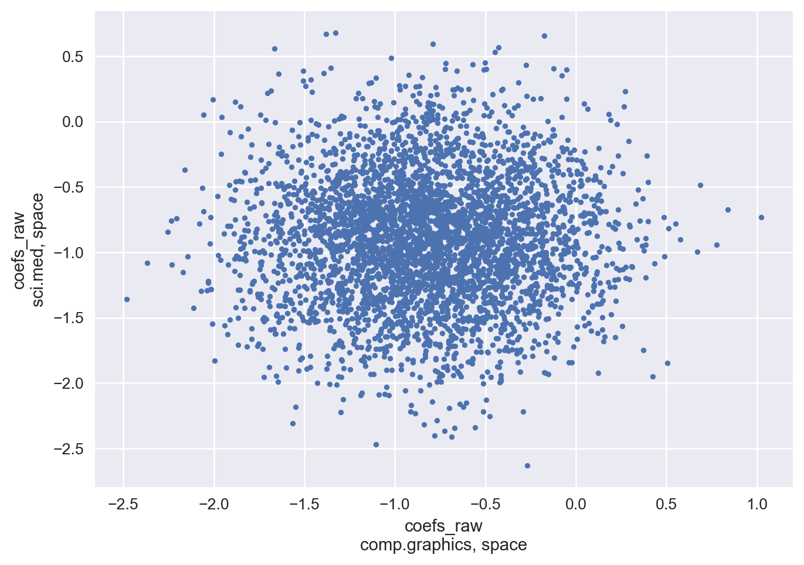
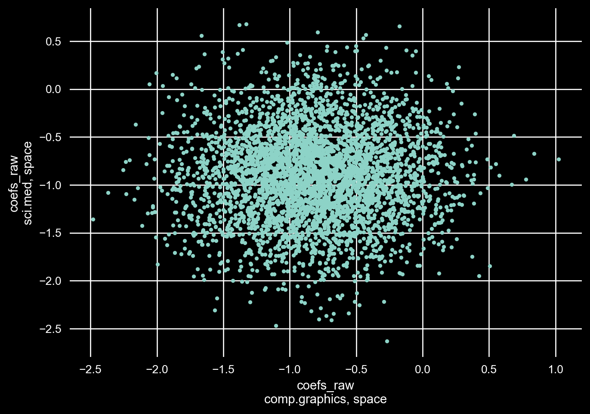
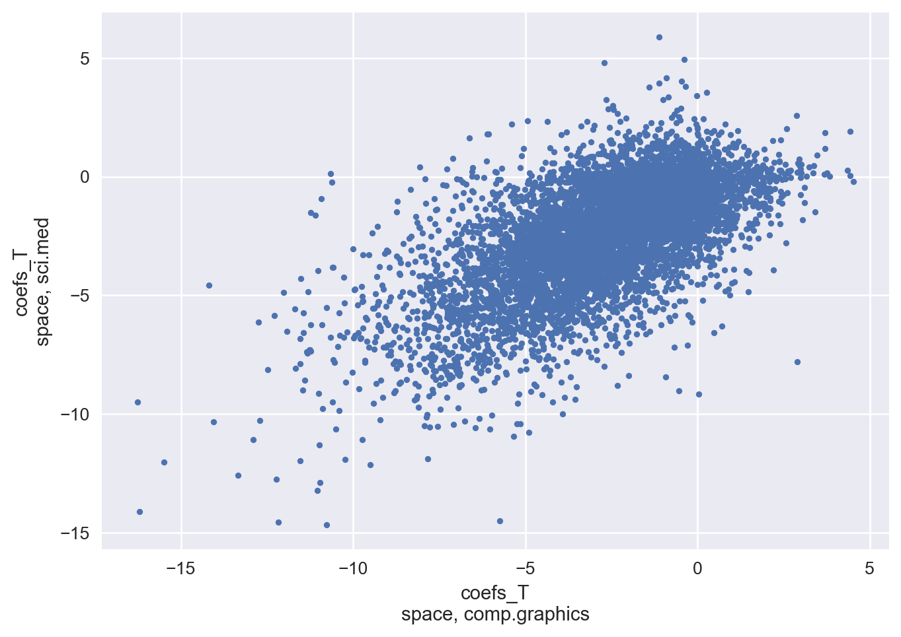
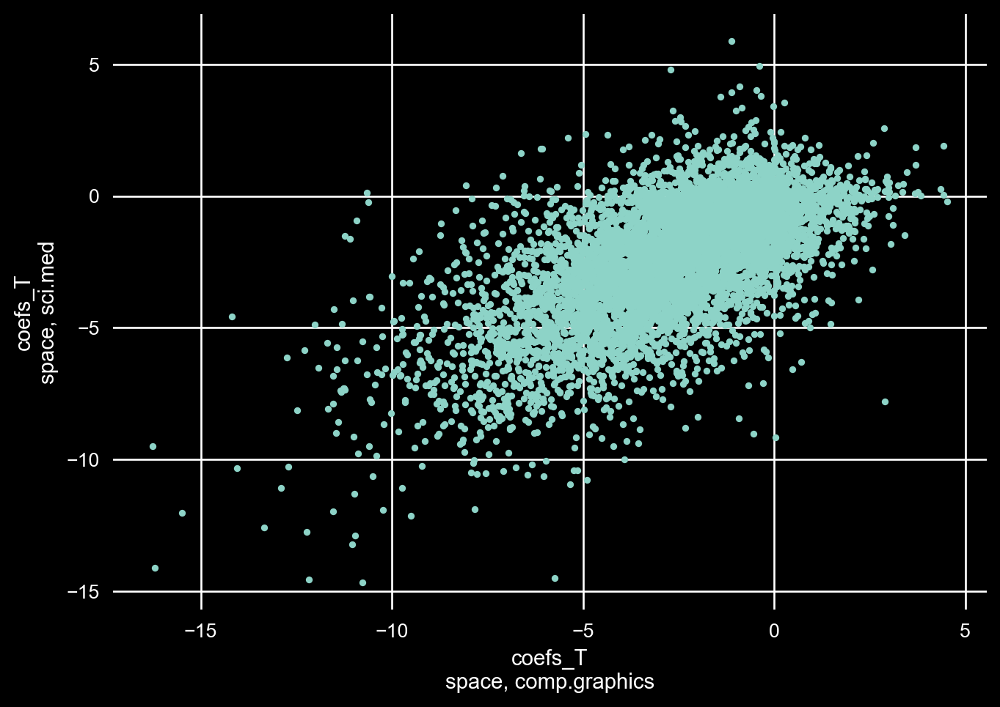

# imports
import re
from collections import Counter
from typing import Literal
import arviz as az
import matplotlib.pyplot as plt
import numpy as np
import plotly.graph_objects as go
import pymc as pm
import pytensor.sparse as spt
import pytensor.tensor as pt
import xarray as xr
from numpy.typing import NDArray
from scipy import stats
from scipy.sparse import csr_matrix
from sklearn.datasets import fetch_20newsgroups
from sklearn.metrics import classification_report, confusion_matrixOverview
We expand on the hands-on example of the last post and show how we can leverage TF-IDF sparse embeddings to build a multinomial logistic regression classifier.
Introduction
In the previous post we created TF-IDF embeddings using a toy dataset and with the help of some dimensionality reduction plotted our embeddings in three-dimensional space. We showed that the TF-IDF embeddings held enough information within them to allow us to distinguish between the article classes.
In this post we are going to build a classifier using the Bayesian framework to classify an out-of-sample subset of our texts and we are going to also inspect which words are most influential in predicting class membership.
Finally, we are also going to go over some important assumptions that multiclass classification inherently make and look at ways to get around these limitations.
Multinomial Logistic Regression
Multinomial Logistic Regression (MLR) is the generalization of Logistic Regression to \(k\) classes. The goal of MLR is to predict the probability that a sample \(i\) belongs to some class \(k\). More formally, suppose we have \(y \in \{0, 1, ... K - 1\}\) where \(K\) are the total number of mutually exclusive classes.
We want to estimate \(P(y = k|\mathbf{x})\). Where \(\mathbf{x}\) is our input features in \(\mathbf{x} \in \mathbb{R}^{D}\) for one observation.
We condition our probability estimates for each class \(k\) on a linear function of the input features \[ logits_{k} = \alpha_{k} + \mathbf{x}^{T}\pmb{\beta}_{k} \]
and transform the outputs to probability space, \(P(y = k | \mathbf{x}) \in (0, 1)\), by applying the softmax function
\[ P(y = k | \mathbf{x}) = \frac{exp(logits_{k})}{\sum_{j=0}^{K-1}exp(logits_{j})} \]
The softmax ensures that the sum of the class probabilities sum to one \(\sum_{k} P(y = k | \mathbf{x}) = 1\) this property also makes the softmax invariant to additive shifts. This means the softmax applied to our logits vector
\[ \textbf{logits} = \begin{bmatrix} logits_{0} && logits_{1} & ... & logits_{k-1} \end{bmatrix} \]
plus some constant \(c\) results in the same solution
\[ softmax(\textbf{logits}) = softmax(\textbf{logits} + c) \]
because we have multiple solutions the model parameters are not identifiable. In order to induce identifiability we need to either
- Constrain one class as a reference class \(\alpha_{k} = 0\) and \(\mathbf{\beta}_{k} = 0\) or
- Constrain the parameters of all classes to sum to zero \(\sum_{k} \mathbf{\beta}_{k} = 0\)
Tip
In this post we use the sum to zero constrain as it makes it simpler to inspect the weights of all the classes. If you constrain the model using the reference class approach you will need to further compute the weights of the reference class post model fitting.
The likelihood function for a single observation is just the predicted probability for the true class
\[ P(y_{i} | \hat{\textbf{y}_{i}}) = \hat{y}_{y_{i}} \]
where
\[ \hat{\textbf{y}_{i}} = \begin{bmatrix} \hat{y}_{i0} && \hat{y}_{i1} && ... \hat{y}_{iK-1} \end{bmatrix} \]
if we represent \(y_{i}\) as a one-hot encoded vector where all the entries are zero except for the entry representing the true class then we have
\[ P(y_{i} | \hat{\textbf{y}_{i}}) = \prod_{k=0}^{K-1}(\hat{y}_{ik})^{y_{ik}} \]
this is simpler to represent as the log-likelihood
\[ logP(y_{i} | \hat{\textbf{y}_{i}}) = \sum_{k=0}^{K-1}y_{ik} \cdot log\hat{y}_{ik} \]
and because the one-hot vector representation of \(y_{i}\) for all classes not the correct class is zero, we can simplify our log-likelihood to
\[ logP(y_{i} | \hat{\textbf{y}_{i}}) = log\hat{y}_{ic} \]
where \(c\) here represents the correct class.
Before wrapping up this section, I want to go over an important property of MLR that is often overlooked and that is the Independence of Irrelevant Alternatives (IIA). What IIA posits is that the odds ratio between two class choices are independent of other “irrelevant” alternatives. Mathematically this says
\[ \frac{P(y = i | \mathbf{x})}{P(y = j | \mathbf{x})} = exp(logits_{i} - logits_{j}) \]
which in many cases might not be realistic.
For example, say you are trying to predict the probabilities for three different candidates of winning an election. IIA implies that the odds ratio between any two candidates is independent of the third. However, we know that this can’t be true due to the nature of elections as a vote for a particular candidate takes away probability of winning from another.
Sparse Matrix Multiplication
Coming back to the classification problem at hand. Our input features are the TF-IDF embeddings that we generated in the previous post. Now, we could just use it as is, however, that would be extremely inefficient because most of the matrix multiplications will be zeros.
Instead of dense matrix vector multiplication which is defined as
\[ y_{i} = \sum_{j=1}^{n}\textbf{A}_{ij}x_{j} \]
we are going to use sparse matrix vector multiplication defined as
\[ y_{i} = \sum_{j \in NZ_{i}}^{n}\textbf{A}_{ij}x_{j} \]
where \(NZ_{i}\) is the set of column indexes where \(A_{ij} \ne 0\). Essentially, we skip the zero multiplications and summations.
In practice, however, we often represent sparse matrices in compressed sparse row (CSR) format or (CSC) for compressed columns. Since we are going to be working with CSR let’s look at how that format is set up and then we can talk about how matrix vector multiplication works with CSR.
The CSR format takes a matrix \(A \in \mathbb{R}^{m \times n}\) and breaks it apart into three one-dimensional vectors
- Data: This is a vector of all the non-zeros elements in the matrix entered starting from the top-left of the matrix working to the bottom-right
- Indices: This is a vector that maps to column indices in the original matrix for each non-zero element in our data vector
- Index Pointer (Indptr): This is a vector that stores information about the row boundaries (when a row starts and stops)
Let’s take a look at an example:
Let
\[ A = \begin{bmatrix} 0 && 0 && 1 && 0 \\ 4 && 0 && 2 && 0 \\ 0 && 2 && 0 && 0 \end{bmatrix} \]
Turning this into CSR format we have
\[ data = \begin{bmatrix} 1 && 4 && 2 && 2 \end{bmatrix} \]
\[ indices = \begin{bmatrix} 2 && 0 && 2 && 1 \end{bmatrix} \]
and
\[ indptr = \begin{bmatrix} 0 && 1 && 3 && 4 \end{bmatrix} \]
Let’s discuss how indptr is constructed because that is not clear just by looking at it.
We scan through the sparse matrix row-wise and add the number of non-zero elements starting at index zero. Then that value becomes your next starting position.
So in our example starting at the first row
\[ \text{initial index} = 0 \]
\[ \text{first row number non-zero} = 1 \]
\[ \text{next index} = 0 + 1 \]
The second row we now have
\[ \text{current index} = 1 \]
\[ \text{second row number non-zero} = 2 \]
\[ \text{next index} = 2 + 1 = 3 \]
Finally, the third and last row we have
\[ \text{current index} = 3 \]
\[ \text{third row number non-zero} = 1 \]
\[ \text{next index} = 3 + 1 = 4 \]
which results in
\[ indptr = \begin{bmatrix} 0 && 1 && 3 && 4 \end{bmatrix} \]
alright, then! Let’s walk through how we can perform matrix vector multiplication using a CSR matrix.
Let’s re-use our \(\textbf{A}\) from above and let’s say our vector is
\[ \textbf{x} = \begin{bmatrix} 1 \\ 2 \\ 3 \\ 4 \\ \end{bmatrix} \]
and we want to compute
\[ y = \textbf{A} \cdot \textbf{x} \]
we loop over the rows \(i\) in \(\textbf{A}\) computing
\[ y_{i} = \sum_{k=\text{indptr[i]}}^{\text{indptr[i + 1] - 1}} \text{data[k]} \cdot \textbf{x}\text{[indices[k]]} \]
Let’s walk through it step by step:
we start with \(\colorbox{blue}{\color{white}{i = 0}}\)
which gives us \(\colorbox{blue}{\color{white}{k = indptr[i=0] = 0}}\)
and \(\colorbox{blue}{\color{white}{indptr[0 + 1] - 1 = 1 - 1 = 0}}\)
this means our summation for \(\colorbox{blue}{\color{white}{i=0}}\)
is \(\bbox[blue]{\color{white}{\sum_{k=0}^{0}}}\)
just one element.
With \(\colorbox{blue}{\color{white}{k=0}}\) we have
\[ \colorbox{blue}{\color{white}{data[k=0] = 1}} \]
and
\[ \colorbox{blue}{\color{white}{\textbf{x}[indices[k=0]] = x[2] = 3}} \]
multiplying them together we have \(\bbox[blue]{\color{white}{1 \times 3 = 3}}\) for the first element in our resultant vector.
Next, we increment \(\colorbox{blue}{\color{white}{i = 1}}\)
which gives us \(\colorbox{blue}{\color{white}{k = indptr[i=1] = 1}}\)
and \(\colorbox{blue}{\color{white}{indptr[1 + 1] - 1 = 3 - 1 = 2}}\)
and now our sum is \(\bbox[blue]{\color{white}{\sum_{k=1}^{2}}}\)
which implies we have two elements in our summation.
First, for \(\colorbox{blue}{\color{white}{k=1}}\) we have
\[ \colorbox{blue}{\color{white}{data[k=1] = 4}} \]
and
\[ \colorbox{blue}{\color{white}{\textbf{x}[indices[k=1]] = x[0] = 1}} \]
multiplying them together we have \(\bbox[blue]{\color{white}{4 \times 1 = 4}}\).
Second, for \(\colorbox{blue}{\color{white}{k=2}}\) we have
\[ \colorbox{blue}{\color{white}{data[k=2] = 2}} \]
and
\[ \colorbox{blue}{\color{white}{\textbf{x}[indices[k=2]] = x[2] = 3}} \]
multiplying them together we have \(\bbox[blue]{\color{white}{2 \times 3 = 6}}\) and our second element in our resultant vector is \(\colorbox{blue}{\color{white}{4 + 6 = 10}}\)
Finally, we increment \(\colorbox{blue}{\color{white}{i = 2}}\)
which gives us \(\colorbox{blue}{\color{white}{k = indptr[i=2] = 3}}\)
and \(\colorbox{blue}{\color{white}{indptr[2 + 1] - 1 = 4 - 1 = 3}}\)
and now our sum is \(\bbox[blue]{\color{white}{\sum_{k=3}^{3}}}\)
which implies we have one element in our summation.
For \(\colorbox{blue}{\color{white}{k=3}}\) we have
\[ \colorbox{blue}{\color{white}{data[k=3] = 2}} \]
and
\[ \colorbox{blue}{\color{white}{\textbf{x}[indices[k=3]] = x[1] = 2}} \]
multiplying them together we have \(\bbox[blue]{\color{white}{2 \times 2 = 4}}\) for the last element in our resultant vector.
Thus, our resultant vector is
\[ y = \textbf{A} \cdot \textbf{x} = \begin{bmatrix} 3 \\ 10 \\ 4 \end{bmatrix} \]
Model Definition
We will start with the “vanilla” MLR specification that assumes IIA. Admittedly, our problem of classifying text using the TF-IDF embeddings most likely satisfies IIA but for demonstration purposes we will implement a model that explicitly deals with IIA.
Vanilla MLR:
\[ y \sim Categorical(\textbf{p}) \]
\[ \textbf{p} = softmax(\pmb{\alpha} + \pmb{\beta}\textbf{X}) \]
\[ \pmb{\alpha} \sim Normal(0, 1) \]
\[ \pmb{\beta} \sim Normal(0, 0.5) \]
Also remember that we are constraining our model such that
\[ \sum_{k=1}^{K}\alpha_{k} = 0 \]
\[ \sum_{k=1}^{K}\beta_{kd} = 0 \]
Where we have \(k\) classes and \(d\) features.
Caution
We discussed the two different ways to impose identifiability to our model and talked about the nice property of having all the coefficients available to us using the sum to zero constraint. It is important to mention that the drawback is that this method is slower because you are explicitly estimating those coefficients.
Structured Covariance MLR
In order to address IIA we need to model the correlations between class-wise coefficients. We can model it like
\[ y \sim Categorical(\textbf{p}) \]
\[ \textbf{p} = softmax(\pmb{\alpha} + \pmb{\beta}\textbf{X}) \]
\[ \pmb{\alpha} \sim Normal(0, 1) \]
\[ \pmb{\beta} \sim MVNormal(\textbf{0}, \pmb{\Sigma}_{class}) \]
\[ \pmb{\Sigma}_{class} \sim \textbf{LKJ}(2.0) \]
In this model we specifically model the covariance between the coefficients across classes by placing an \(LKJ(\eta)\) prior on the covariance matrix. The \(\eta\) parameter adjusts our prior belief on how strong/weak we expect the coefficients to be correlated.
Where
- \(\eta = 1\) places a uniform distribution over the correlation matrices
- \(\eta \lt 1\) places more weight over the coefficients being correlated and
- \(\eta \gt 1\) places lesser weight over the coefficients being correlated
In our example we set \(\eta = 2.0\) because our prior belief is that in this particular example the correlations between class coefficients will be small.
Results
Setup
Let’s go ahead and pull the code from the prior post that pulls in the toy dataset and generates the TF-IDF embeddings.
# Set a seed for reproducibility
seed = sum(map(ord, "multinomialLR"))
rng = np.random.default_rng(seed)# TF-IDF Functions
def tokenize(text: str, TOKEN_PATTERN = re.compile(r"(?u)\b\w\w+\b")) -> list[str]:
tokens = TOKEN_PATTERN.findall(text.lower())
return tokens
def tf_log(count):
return 1 + np.log10(count)
def idf(doc_count, num_documents):
return np.log10(num_documents / doc_count)
def tf_idf(vocabulary: list, tokens: list[list], mode: Literal['fit', 'transform'] = "fit") -> NDArray:
"""
Creates sparse TF-IDF embeddings from a given vocabulary and the tokens of documents
Parameters
----------
vocabulary: list
The total unique words in your training set corpus
tokens: list[list]
a list of documents' list of tokens
mode: Literal
whether you are fitting on a new corpus or transforming to an already existing corpus. default (fit)
Returns
-------
NDArray
The sparse embeddings in a dense representation
"""
doc_term_counts = [Counter(doc) for doc in tokens]
# Compute TF matrix: rows = terms, columns = documents
term_frequencies = []
for term in vocabulary:
term_frequencies.append([
tf_log(doc.get(term, 0)) if doc.get(term, 0) > 0 else 0
for doc in doc_term_counts
])
term_frequencies = np.array(term_frequencies)
num_documents = term_frequencies.shape[1]
document_frequencies = np.sum(term_frequencies > 0, axis=1)
if mode == "fit":
inverse_document_frequencies = []
for doc_count in document_frequencies:
inverse_document_frequencies.append(idf(doc_count, num_documents))
inverse_document_frequencies = np.array(inverse_document_frequencies)
else:
inverse_document_frequencies = []
for doc_count in document_frequencies:
if doc_count > 0:
inverse_document_frequencies.append(idf(doc_count, num_documents))
else:
inverse_document_frequencies.append(0)
inverse_document_frequencies = np.array(inverse_document_frequencies)
return term_frequencies * inverse_document_frequencies[:, None]# Pull in toy data
categories = [
"sci.med",
"comp.graphics",
"sci.space",
]
newsgroups_train = fetch_20newsgroups(subset='train', categories=categories)
newsgroups_test = fetch_20newsgroups(subset='test', categories=categories)# Create training dataset TF-IDF
train_tokens = [tokenize(text) for text in newsgroups_train.data]
vocabulary = sorted(set(sum(train_tokens, [])))
train_tf_idf = tf_idf(vocabulary=vocabulary, tokens=train_tokens, mode='fit')
# Create testing dataset TF-IDF
test_tokens = [tokenize(text) for text in newsgroups_test.data]
test_tf_idf = tf_idf(vocabulary=vocabulary, tokens=test_tokens, mode='transform')
# Create X,y sets
X_train = train_tf_idf.T
y_train = newsgroups_train.target
X_test = test_tf_idf.T
y_test = newsgroups_test.targetHere we will convert our sparse matrices from the dense representation with all the zeros to the CSR representation that we discussed above.
# Create Sparse CSR Matrices
X_train_sparse = csr_matrix(X_train)
X_test_sparse = csr_matrix(X_test)Vanilla MLR
Alright, with our TF-IDF embeddings created and converted to CSR we are ready to start building our model. Let’s start with the typical “vanilla” MLR model that assumes IIA. We are going to be doing all of this in a Bayesian framework which gives us the flexibility to extend this “vanilla” model to include more complex relationships.
Notice that we are enforcing identifiability by enducing a sum to zero over the parameters across the classes and notice that we are computing our logits using a sparse matrix vector multiplication algorithm.
# MLR Model specification
coords = {
"classes": newsgroups_test.target_names,
"features": vocabulary,
"num_obs": np.arange(X_train.shape[0])
}
with pm.Model(coords=coords) as sparse_model:
# Data containers
y = pm.Data("y", y_train, dims="num_obs")
X = pm.Data("X", X_train_sparse)
# Priors
# Unconstrained raw parameters
alpha_raw = pm.Normal("alpha_raw", 0, 1, dims="classes")
coefs_raw = pm.Normal("coefs_raw", 0, 0.5, dims=("classes", "features"))
# Enforce identifiability by subtracting mean across the class dimension
alpha = alpha_raw - pt.mean(alpha_raw)
coefs = coefs_raw - pt.mean(coefs_raw, axis=0)
# Compute logits using sparse dot
logits = alpha + spt.structured_dot(X, coefs.T)
# Likelihood
pm.Categorical("y_obs", logit_p=logits, observed=y, dims="num_obs")One thing to note is that at the moment sparse tensor operations are not supported in sampling accelerators like nutpie or numpyro via PyMC. So we will have to sample with the default PyMC sampler.
# Sampling
with sparse_model:
idata = pm.sample(mp_ctx="spawn", random_seed=rng)With our samples in hand, let’s pull a summary of the learned weights and inspect what words based on the TF-IDF embeddings have the largest influence over each class.
# Get model summaries
summary_df = az.summary(idata, kind="stats")In the tables below, you’ll notice that in the brackets you have “[class name, feature name]” and these have been sorted by the posterior mean to represent the largest influential words per class.
For the comp.graphics class words like “graphics” and “image” are influential to push a document to being classified as comp.graphics. This seems sensible to me.
Similarly, the influential features for the other two classes also seem sensible.
# Look at weights learned for the comp.graphics class
summary_df.filter(regex=r"(?i)coefs_raw\[comp", axis='index').sort_values("mean", ascending=False).head(10)| mean | sd | hdi_3% | hdi_97% | |
|---|---|---|---|---|
| coefs_raw[comp.graphics, graphics] | 1.392 | 0.482 | 0.553 | 2.351 |
| coefs_raw[comp.graphics, image] | 0.802 | 0.495 | -0.098 | 1.746 |
| coefs_raw[comp.graphics, file] | 0.762 | 0.477 | -0.130 | 1.671 |
| coefs_raw[comp.graphics, 3d] | 0.758 | 0.457 | -0.055 | 1.653 |
| coefs_raw[comp.graphics, hi] | 0.625 | 0.480 | -0.247 | 1.548 |
| coefs_raw[comp.graphics, files] | 0.619 | 0.486 | -0.310 | 1.508 |
| coefs_raw[comp.graphics, code] | 0.612 | 0.487 | -0.272 | 1.526 |
| coefs_raw[comp.graphics, video] | 0.601 | 0.497 | -0.314 | 1.525 |
| coefs_raw[comp.graphics, format] | 0.595 | 0.488 | -0.376 | 1.462 |
| coefs_raw[comp.graphics, windows] | 0.579 | 0.484 | -0.332 | 1.464 |
# Look at weights learned for the sci.med class
summary_df.filter(regex=r"(?i)coefs_raw\[sci.med", axis='index').sort_values("mean", ascending=False).head(10)| mean | sd | hdi_3% | hdi_97% | |
|---|---|---|---|---|
| coefs_raw[sci.med, doctor] | 0.776 | 0.480 | -0.098 | 1.707 |
| coefs_raw[sci.med, pitt] | 0.738 | 0.473 | -0.153 | 1.617 |
| coefs_raw[sci.med, disease] | 0.712 | 0.470 | -0.210 | 1.537 |
| coefs_raw[sci.med, health] | 0.652 | 0.487 | -0.238 | 1.596 |
| coefs_raw[sci.med, medical] | 0.612 | 0.482 | -0.249 | 1.551 |
| coefs_raw[sci.med, msg] | 0.609 | 0.480 | -0.276 | 1.527 |
| coefs_raw[sci.med, treatment] | 0.598 | 0.487 | -0.316 | 1.473 |
| coefs_raw[sci.med, geb] | 0.584 | 0.488 | -0.296 | 1.523 |
| coefs_raw[sci.med, she] | 0.579 | 0.480 | -0.269 | 1.528 |
| coefs_raw[sci.med, banks] | 0.578 | 0.498 | -0.363 | 1.477 |
# Look at weights learned for the sci.space class
summary_df.filter(regex=r"(?i)coefs_raw\[sci.space", axis='index').sort_values("mean", ascending=False).head(10)| mean | sd | hdi_3% | hdi_97% | |
|---|---|---|---|---|
| coefs_raw[sci.space, space] | 1.725 | 0.478 | 0.841 | 2.631 |
| coefs_raw[sci.space, orbit] | 0.903 | 0.487 | -0.047 | 1.764 |
| coefs_raw[sci.space, nasa] | 0.804 | 0.483 | -0.116 | 1.672 |
| coefs_raw[sci.space, moon] | 0.731 | 0.485 | -0.226 | 1.610 |
| coefs_raw[sci.space, shuttle] | 0.667 | 0.461 | -0.212 | 1.526 |
| coefs_raw[sci.space, pat] | 0.651 | 0.495 | -0.307 | 1.546 |
| coefs_raw[sci.space, launch] | 0.639 | 0.483 | -0.282 | 1.494 |
| coefs_raw[sci.space, henry] | 0.573 | 0.485 | -0.300 | 1.500 |
| coefs_raw[sci.space, digex] | 0.572 | 0.503 | -0.363 | 1.521 |
| coefs_raw[sci.space, planets] | 0.542 | 0.475 | -0.303 | 1.463 |
Let’s inspect the IIA assumption next.
If we take the most influential feature weight of one of the classes then we should expect that the same feature weight for the other two classes to have a small weight.
This would imply that conditional on the high weight class the other two classes would be dependent. In other words, there would be some correlation (positive in this case) between that feature’s weights in the other two classes.
Below, we plot the posterior weights for the feature “space”, which is the most influential feature for class sci.space, for the classes comp.graphics and sci.med.
Here you see the effects of IIA, where it is clear that there is no correlation between the two class weights for that feature.
# look at IIA correlations
plt.style.use('seaborn-v0_8')
az.plot_pair(idata, var_names=['coefs_raw'], coords={"classes": ['comp.graphics', 'sci.med'], "features": ['space']});
# look at IIA correlations
plt.style.use('dark_background')
az.plot_pair(idata, var_names=['coefs_raw'], coords={"classes": ['comp.graphics', 'sci.med'], "features": ['space']});
As we mentioned earlier, though, IIA in this particular case will have minor impacts to model performance.
Let’s produce out-of-sample predictions using our test dataset and compute some standard classification evaluation metrics.
Looking at the f1-scores, the model performs well at differentiating between the three classes.
# Out of sample predictions
with sparse_model:
pm.set_data(
new_data={
"X": X_test_sparse,
"y": np.ones_like(y_test)
},
coords={
"num_obs": np.arange(len(y_test))
}
)
idata_posterior = pm.sample_posterior_predictive(idata, predictions=True)# Evaluations
idata_posterior['posterior_predictive'] = idata_posterior.predictions
idata_posterior['observed_data'] = xr.Dataset({"y_obs": xr.DataArray(y_test)})
y_pred = stats.mode(az.extract(idata_posterior, group="predictions", var_names="y_obs").values, axis=1).mode
print(classification_report(y_true=y_test, y_pred=y_pred)) precision recall f1-score support
0 0.89 0.96 0.92 389
1 0.95 0.91 0.93 396
2 0.97 0.93 0.95 394
accuracy 0.93 1179
macro avg 0.94 0.93 0.93 1179
weighted avg 0.94 0.93 0.93 1179
Structured Covariance MLR
Let’s extend the previous model to handle IIA.
As mentioned above, we are setting our prior to assume that the correlations between the classes are minute. However, with the large volume of data used for sampling, if this prior is not appropriate the likelihood will adjust our covariance weights to reflect that.
Notice here, we are working with our coefficients in the transposed space which changes the axis used to induce our sum to zero constraint.
Warning
This model is more complex and as such requires more samples. Below we increased the number of chains to acquire more samples while leveraging parallel computing. If your machine has less than 8 cores, you will need to adjust the number of chains accordingly.
# Features and classes
D = X_train_sparse.shape[1]
K = 3
with pm.Model(coords=coords) as sparse_correlated_model:
# Data containers
y = pm.Data("y", y_train, dims="num_obs")
X = pm.Data("X", X_train_sparse)
# Priors
# Unconstrained raw parameters
alpha_raw = pm.Normal("alpha_raw", 0, 1, dims="classes")
# Enforce identifiability by subtracting mean across the class dimension
alpha = alpha_raw - pt.mean(alpha_raw)
# covariance prior
sd_dist = pm.HalfNormal.dist(1.0)
chol, corr, stds = pm.LKJCholeskyCov(
"class_cov", n=K, eta=2.0, sd_dist=sd_dist
)
# non-centered parameterization for better sampling
z = pm.Normal("z", mu=0, sigma=1, shape=(D, K), dims=("features", "classes"))
coefs_T = pm.Deterministic("coefs_T", pt.dot(z, chol.T), dims=("features", "classes"))
# Enforce identifiability by subtracting mean across the class dimension
coefs_T_constrained = coefs_T - pt.mean(coefs_T, axis=1, keepdims=True)
# Compute logits using sparse dot
logits = alpha + spt.structured_dot(X, coefs_T_constrained)
# Likelihood
pm.Categorical("y_obs", logit_p=logits, observed=y, dims="num_obs")
with sparse_correlated_model:
correlated_idata = pm.sample(mp_ctx="spawn", target_accept=0.9, cores=8, random_seed=rng)Let’s take a look at the posterior means of the correlations between classes that the model estimated.
Okay, looks like the correlations are indeed small.
corr_tbl = az.summary(correlated_idata, var_names=["class_cov_corr"], kind="stats")corr_tbl| mean | sd | hdi_3% | hdi_97% | |
|---|---|---|---|---|
| class_cov_corr[0, 0] | 1.000 | 0.000 | 1.000 | 1.000 |
| class_cov_corr[0, 1] | 0.086 | 0.479 | -0.616 | 1.000 |
| class_cov_corr[0, 2] | -0.067 | 0.368 | -0.767 | 0.530 |
| class_cov_corr[1, 0] | 0.086 | 0.479 | -0.616 | 1.000 |
| class_cov_corr[1, 1] | 1.000 | 0.000 | 1.000 | 1.000 |
| class_cov_corr[1, 2] | -0.025 | 0.366 | -0.719 | 0.608 |
| class_cov_corr[2, 0] | -0.067 | 0.368 | -0.767 | 0.530 |
| class_cov_corr[2, 1] | -0.025 | 0.366 | -0.719 | 0.608 |
| class_cov_corr[2, 2] | 1.000 | 0.000 | 1.000 | 1.000 |
Let’s also ensure that our influential features still make sense.
Notice because of our transposed coefficients in the model definintion we now have the features first and the class second in the brackets.
Looks like our weights, relatively speaking, are still sensible. You should notice that the weight values themselves are different.
cor_summary_df = az.summary(correlated_idata, var_names=["coefs_T"], kind="stats")
cor_summary_df.filter(regex=r"(?i)comp.graphics\]$", axis='index').sort_values("mean", ascending=False).head(10)| mean | sd | hdi_3% | hdi_97% | |
|---|---|---|---|---|
| coefs_T[graphics, comp.graphics] | 3.821 | 2.641 | -0.180 | 8.096 |
| coefs_T[image, comp.graphics] | 2.216 | 1.860 | -0.246 | 5.738 |
| coefs_T[3d, comp.graphics] | 2.124 | 1.836 | -0.474 | 5.549 |
| coefs_T[file, comp.graphics] | 2.094 | 1.803 | -0.473 | 5.526 |
| coefs_T[files, comp.graphics] | 1.728 | 1.726 | -0.834 | 5.102 |
| coefs_T[hi, comp.graphics] | 1.721 | 1.667 | -0.621 | 5.040 |
| coefs_T[code, comp.graphics] | 1.677 | 1.674 | -0.727 | 5.086 |
| coefs_T[format, comp.graphics] | 1.658 | 1.625 | -0.818 | 4.752 |
| coefs_T[video, comp.graphics] | 1.658 | 1.671 | -0.859 | 4.992 |
| coefs_T[card, comp.graphics] | 1.596 | 1.644 | -0.863 | 4.869 |
cor_summary_df.filter(regex=r"(?i)sci.med\]$", axis='index').sort_values("mean", ascending=False).head(10)| mean | sd | hdi_3% | hdi_97% | |
|---|---|---|---|---|
| coefs_T[doctor, sci.med] | 1.684 | 1.482 | -0.646 | 4.573 |
| coefs_T[pitt, sci.med] | 1.586 | 1.469 | -0.584 | 4.579 |
| coefs_T[disease, sci.med] | 1.457 | 1.565 | -0.601 | 4.513 |
| coefs_T[msg, sci.med] | 1.355 | 1.426 | -0.820 | 4.245 |
| coefs_T[health, sci.med] | 1.343 | 1.517 | -0.901 | 4.404 |
| coefs_T[treatment, sci.med] | 1.308 | 1.397 | -0.808 | 4.234 |
| coefs_T[medical, sci.med] | 1.303 | 1.433 | -0.784 | 4.233 |
| coefs_T[she, sci.med] | 1.251 | 1.379 | -0.809 | 4.101 |
| coefs_T[banks, sci.med] | 1.196 | 1.445 | -0.995 | 4.186 |
| coefs_T[geb, sci.med] | 1.170 | 1.406 | -0.897 | 4.188 |
cor_summary_df.filter(regex=r"(?i)sci.space\]$", axis='index').sort_values("mean", ascending=False).head(10)| mean | sd | hdi_3% | hdi_97% | |
|---|---|---|---|---|
| coefs_T[space, sci.space] | 3.200 | 2.602 | -0.243 | 7.963 |
| coefs_T[orbit, sci.space] | 1.657 | 1.632 | -0.514 | 4.835 |
| coefs_T[nasa, sci.space] | 1.480 | 1.497 | -0.514 | 4.473 |
| coefs_T[moon, sci.space] | 1.367 | 1.486 | -0.517 | 4.470 |
| coefs_T[shuttle, sci.space] | 1.227 | 1.428 | -0.866 | 4.140 |
| coefs_T[launch, sci.space] | 1.199 | 1.426 | -0.885 | 4.083 |
| coefs_T[pat, sci.space] | 1.196 | 1.386 | -0.787 | 3.967 |
| coefs_T[digex, sci.space] | 1.056 | 1.335 | -0.873 | 3.982 |
| coefs_T[henry, sci.space] | 1.041 | 1.312 | -0.935 | 3.683 |
| coefs_T[earth, sci.space] | 1.011 | 1.352 | -1.093 | 3.788 |
Let’s inspect the same feature for the same two classes that we did earlier to check whether our structured covariance has appropriately delt with IIA.
Looking at the plot below, we certainly see positive correlation between the two class weights for the “space” feature!
plt.style.use('seaborn-v0_8')
az.plot_pair(correlated_idata, var_names=['coefs_T'], coords={"classes": ['comp.graphics', 'sci.med'], "features": ['space']});
plt.style.use('dark_background')
az.plot_pair(correlated_idata, var_names=['coefs_T'], coords={"classes": ['comp.graphics', 'sci.med'], "features": ['space']});
Now let’s generate out-of-sample predictions and evaluate our f1-scores to see if we have any differences from the previous “vanilla” model.
Looking at the f1-scores, seems like we have a slight improvement due to the additional information captured by the dependecies across the classes.
with sparse_correlated_model:
pm.set_data(
new_data={
"X": X_test_sparse,
"y": np.ones_like(y_test)
},
coords={
"num_obs": np.arange(len(y_test))
}
)
correlated_idata_posterior = pm.sample_posterior_predictive(correlated_idata, predictions=True)correlated_idata_posterior['posterior_predictive'] = correlated_idata_posterior.predictions
correlated_idata_posterior['observed_data'] = xr.Dataset({"y_obs": xr.DataArray(y_test)})
correlated_y_pred = stats.mode(az.extract(correlated_idata_posterior, group="predictions", var_names="y_obs").values, axis=1).mode
print(classification_report(y_true=y_test, y_pred=correlated_y_pred)) precision recall f1-score support
0 0.91 0.96 0.93 389
1 0.96 0.92 0.94 396
2 0.97 0.95 0.96 394
accuracy 0.94 1179
macro avg 0.94 0.94 0.94 1179
weighted avg 0.94 0.94 0.94 1179
Finally, let’s plot a confusion matrix to inspect the predictions and identify where errors dominate.
Looks like our model struggles in discriminating between sci.med and comp.graphics. This is apparent in the figure below where our model makes the most errors when it predicts sci.med when the actual class is comp.graphics
My speculation for why these classes are more challenging to discriminate may be due to polysemous words that can be found in both domains.
For example, words like “screen” in computer graphics can obviously mean the computer screen whereas in medicine it can mean to screen for a disease or condition. Another one I can think of may be the word “virus” where in computer graphics could be referring to a malicous attack versus in medicine which I guess also refers to a malicious attack but you understand what I am saying here.
fig = go.Figure()
fig.add_traces(
[
go.Heatmap(
x = newsgroups_test.target_names,
y = newsgroups_test.target_names,
z = confusion_matrix(y_test, correlated_y_pred),
text=[[col for col in row] for row in confusion_matrix(y_test, correlated_y_pred)],
texttemplate="%{text}",
colorscale="rdbu"
)
]
)
fig.update_layout(
xaxis=dict(title="Actual Class"),
yaxis=dict(autorange='reversed', title = "Predicted Class")
)Confusion Matrix
fig = go.Figure()
fig.add_traces(
[
go.Heatmap(
x = newsgroups_test.target_names,
y = newsgroups_test.target_names,
z = confusion_matrix(y_test, correlated_y_pred),
text=[[col for col in row] for row in confusion_matrix(y_test, correlated_y_pred)],
texttemplate="%{text}",
colorscale="rdbu"
)
]
)
fig.update_layout(
xaxis=dict(title="Actual Class", gridcolor = 'rgba(68, 68, 68, 0.5)'),
yaxis=dict(autorange='reversed', title = "Predicted Class", gridcolor = 'rgba(68, 68, 68, 0.5)'),
plot_bgcolor='black',
paper_bgcolor='rgba(68, 68, 68, 0.5)',
font=dict(
family="Verdana",
size=12,
color="white"
),
)Confusion Matrix
Conclusion
In this post we saw that TF-IDF embeddings can produce very informative features for tasks like text-classification. We also saw how we can handle features, like TF-IDF, that are sparse to improve computational effiency.
Finally, for multi-class single classification using multinomial logistic regression we walked through how to extend the basic principles that impose the IIA assumption to a model that captures the covariances between the classes removing the IIA restrictions.
I hope you found this post interesting and informative, and I hope to see you in the next one!